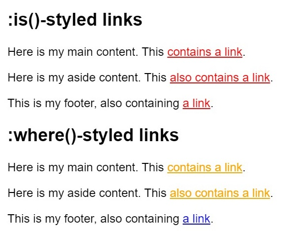

The :is() CSS pseudo-class selector takes a selector list as its argument, and selects any element that can be selected by one of the selectors in that list.
without using :is()
header p:hover, main p:hover, footer p:hover { color: red; cursor: pointer; }
with using :is()
:is(header, main, footer) p:hover { color: red; cursor: pointer; }
The difference between :where() and :is() is that :where() always has zero specificity, whereas :is() takes on the specificity of the most specific selector in its arguments.
html {
font-family: sans-serif;
font-size: 150%;
}
:is(section.is-styling, aside.is-styling, footer.is-styling) a {
color: red;
}
:where(section.where-styling, aside.where-styling, footer.where-styling) a {
color: orange;
}
footer a {
color: blue;
}

The :has() selector allows developers to apply styles to parent elements based on specific conditions met by their descendants.
For instance, styling a list item's border becomes effortless when its child input element is checked.
-
-
-
ul li input:checked {
accent-color: #f806e4;
}
ul li:has(input:checked) {
border: 2px solid #f806e4;
}
min() and max() css functions lets to set the smallest (most negative) and the largest (most positive) value accordingly from a list of comma-separated expressions as the value of a CSS property value.
clamp() css function clamps a middle value within a range of values between a defined minimum bound and a maximum bound. The function takes three parameters: a minimum value, a preferred value, and a maximum allowed value.
width: min(40%, 400px);
width: min(150vw, 100px);
font-size: max(4vw, 2em, 2rem);
font-size: max(min(0.5vw, 0.5em), 1rem);
/* Static values */
width: clamp(200px, 40%, 400px);
width: clamp(10vw, 20em, 100vw);
/* Calculated values */
width: clamp(min(10vw, 20rem), 300px, max(90vw, 55rem));
width: clamp(100px, calc(30% / 2rem + 10px), 900px);
CSS nesting lets you put CSS rules inside each other, kind of like how you can put boxes inside bigger boxes. This helps make your CSS code neater, easier to read, and you don't have to write the same thing over and over again.
Usage Example
.card {
padding: 20px;
&:hover {
box-shadow: 0 0 10px rgba(0,0,0,.1);
}
.title {
font-size: 1.3rem;
}
}
The @layer directive allows you to organize your CSS into logical layers. This organization helps control the order in which styles are applied.
/* Specify the order to apply styles in cascade */
@layer legacyCard, newCard;
/* Imagine you have a lot of styles */
@layer newCard {
.card {
background-color: red;
}
}
@layer legacyCard {
.card {
background-color: green;
}
}
Container Queries allow components to adapt their layout based on the available space of their parent container.
.card {
/*Add as a container type and name*/
container-type: inline-size;
container-name: card;
width: 500px;
}
/* Applies when the card's max width is 600px, not the whole screen */
@container card (max-width: 600px) {
.card-title {
color: blue;
}
}
I hope you enjoy that.